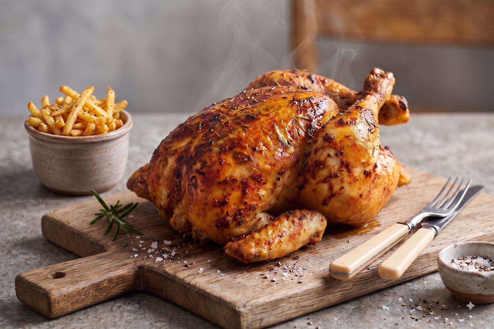
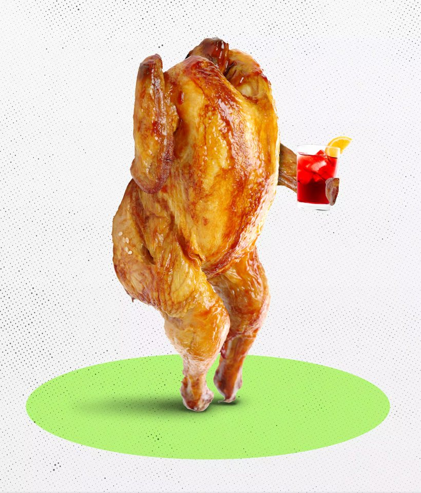
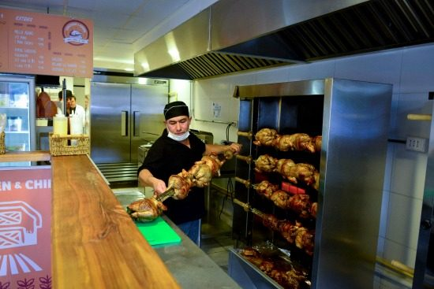

1
Te registras
Una sola vez. Validamos tu correo para poder enviarte la boleta y las promociones.

Adobado 12 horas y dorado sobre carbón de espino. Pídelo en línea, paga por Servipag o depósito y te lo llevamos calentito.
Tres cosas hacemos y las hacemos bien: el pollo al asador, las papas cortadas a mano y los acompañamientos de la casa.
Arma tu pedido en la carta, paga en línea y sigue el estado hasta que el chofer toca tu puerta. Sin llamadas y sin costo de despacho dentro de 3 km.

Una sola vez. Validamos tu correo para poder enviarte la boleta y las promociones.
Eliges de la carta lo que está disponible en el momento y confirmas tu dirección.
Servipag o depósito bancario. La cocina recibe la orden apenas se confirma el pago.
Repartimos dentro de 3 km a la redonda, sin costo, y la boleta te llega al correo.

Los pollos giran entre dos y tres horas sobre brasa viva. El adobo es el mismo de siempre: ajo, comino, merkén y sal de mar, en salmuera desde la noche anterior. Cada tanda sale a la hora exacta en que se pide, por eso la carta muestra en tiempo real lo que queda disponible.
Ver disponibilidad de hoyRepartimos hasta 3 kilómetros a la redonda del local. Si tu dirección queda fuera del radio, puedes retirar tu pedido en el mesón.
| Comuna | Distancia aprox. | Estado |
|---|
Pollo entero, papas fritas grandes, ensalada chilena y bebida de 1,5 litros. Válido de martes a jueves para pedidos en línea.
Agregar un combo